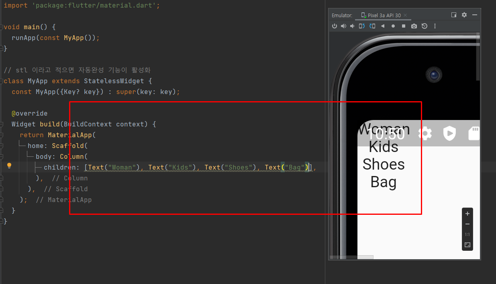

1) 프론트 그리는 순서
- material - 안드로이드/cupertino - ios 중에서 하나를 선택
- Scaffold로 감싼다
- 그리고 이제 제작한다.
2) 생성자의 매개변수에 따라 달라지는 화면
기본적으로 아무런 설정 없이 생성하면 흰색 화면이다.이후 color 속성은 red로 설정하면 배경이 빨간색이 된다.Java에서 배웠던 것처럼 dart에서도 생성자 오버로딩의 개념으로 각각의 객체들의 속성값을 다르게 가져갈 수 있다. 화면에서는 Container 객체를 하나 생성한 다음에 거기에 color: 속성에다가 빨간색의 속성을 집어 넣어서 화면을 붉게 만들었다.
ctrl + space를 누르면 자동완성 기능으로 오버로딩된 속성들이 뜬다.MaterialApp 객체의 여러가지 속성들을 확인할 수 있다.
3) assets 디렉터리 생성 후, 그림 파일들 경로 설정
assets 폴더를 하나 생성한 이후에 그림 파일들을 폴더에 옮겨 놓았다.
pubspec.yaml 파일을 확인한다.pubspec.yaml 파일에 들어가서 경로 설정을 해주어야 한다.
원래 asssets 적혀 있는 각각의 경로를 지우고, assets 디렉터리 내의 모든 파일을 공유하기 위해서 설정을 바꿔 주어야 한다.
.png)
저렇게 바꿔 준 상태에서 오른쪽 상단의 Pub get을 눌러주면 적용이 완료된다.
4) Column과 Row
Column과 Row는 컴포넌트나 위젯 배치에서 각각 세로와 가로로 화면에 출력되게 만든다.
Column 객체에 Text 객체를 넣어서 출력한 화면이다. 세로로 출력이 된다.
Row 객체에 Text 객체를 넣어서 출력한 화면이다. 가로로 출력이 되는 것을 확인할 수 있다.
5. 여러가지 위젯
ctrl + enter 단축키
단축키 alt + enter를 이용하면 widget으로 감싸기를 포함해서 여러가지 기능들이 나온다.Column을 다시 SafeArea 객체로 묶었다고 할 수 있다.
공간값 주기 : Spacer(), Row()의 mainAxisAlignment 속성
Spacer()는 공간을 잡아먹는 객체이다. UI 화면에서 남은 공간이 있으면 그 공간은 Spacer()를 이용하면 공간을 차지하게 된다.
Row()의 속성값인 mainAxisAlignment 속성을 이용해서 공간을 줄 수 있다.
padding 값 주기
padding값을 주기 위해서 alt + enter를 사용alt + enter를 이용하면 현재 객체를 Padding()으로 감싸면서 padding 값을 줄 수 있다.